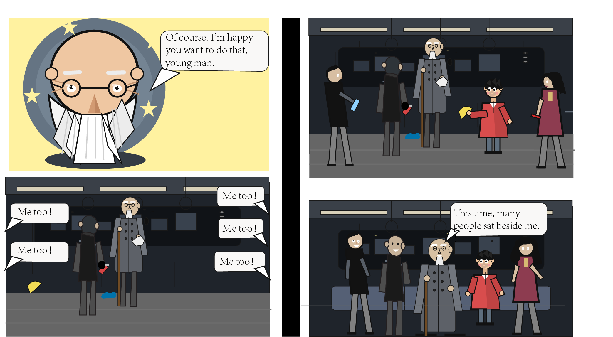

"The elderly man is very happy that a young person is willing to help him. This young man is the same one who had been observing the elderly man from the moment he first got on the subway. As the young man helps pick up the trash, the little boy who was helped earlier also follows along. Gradually, the people who initially passed by and ignored the elderly man also begin to help. In the end, the elderly man happily sits on a clean subway. From the beginning, when no one sat next to him, to now, when the seats beside him are full of people, he smiles with joy."
Credits: images created by myself.